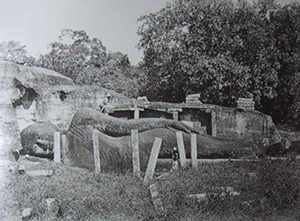
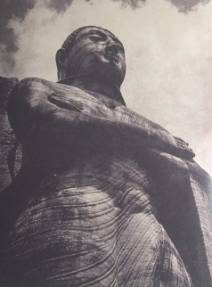
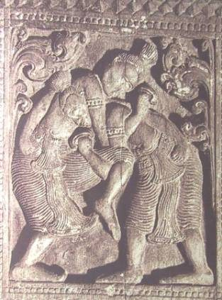
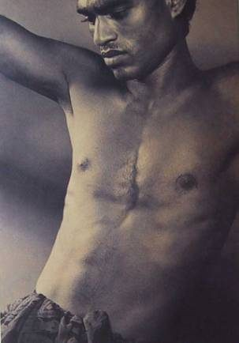
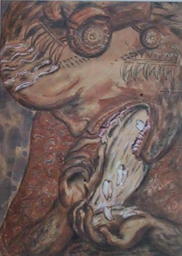
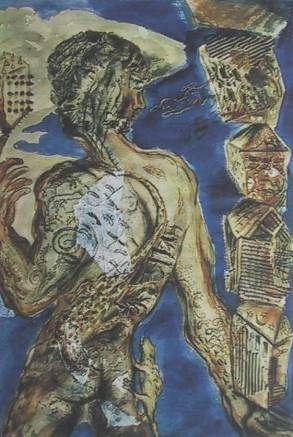
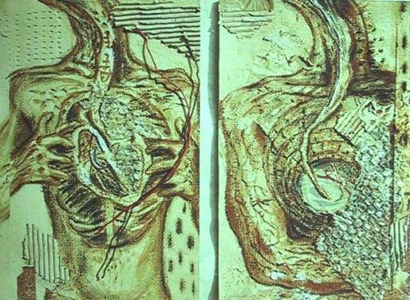

Articles · May 2002
Disco-very: Anthropology, Nationalist Thought, Thamotharampillai Shanaathanan, and an Uncertain Descent into the Ordinary
"…we should consider...the moral[ity of] …a descent into
the ordinary."
Veena Das [i]
1
"Disco-Very," said Muhannad Cader, "that
is what it is."
I laughed, getting his pun, but he went on just to make sure.
"Discovery.. Drunk on Disco- Disco-Very,"
he chuckled mixing English with Sinhala.
I looked over the calm blue waters of Bolgoda, stretching for miles before us, edged by thick, dense foliage that covered so much. The colour of the water changed with the day, a myriad of blues and blue-greens, silvers and golds, absorbing and reflecting light in patterns that I was leaning slowly. Some times a fishing boat would go out, cutting the water silently, splitting and cracking the mirror of the surface, disappearing then, into the bend that would take it out to sea.
"But don't you like watching the animals?" I ask, "you watch Discovery all day, don't you?" Everyday Muhannad didn't draw, which was every day his exhibition drew closer, he would watch TV with a vengeance-and all that was on really on in the mornings was the discovery channel. I some times I thought he loved it, but really, I knew he didn't. "I like watching close ups of the animals…" I was going on, but he stopped me.
"Yes," he said. "Very-like drunk, but not just drunk, but disco-drunk. The camera dancing behind those poor animals-they should just leave them alone."
I laughed and laughed, "You're right. But I like taking
pictures of Kabs."
The water-monitors that lived down the garden, often crawled out
on to the half stone wall that bounded the lake from our lawn,
basking the soft morning sun, disappearing into the water in flash,
as the day heated, returning again, to catch last dying rays of
light, on the still warm rocks. The Kabaragoya, known through
Lanka for the sting of their tails, have scaly backs, long bodies
and sharp claws. Even though I called each different one that
lived with us "Kabs.", in a friendly sort of way-- the
big fellow senior, the little one junior and middle fellow cousin
--I found each repulsive, as each glistened in the sun, claws
bent, slithering slowly
I was obsessed with photographing them.
"But you're an anthropologist," said Muhannad with an air of finality. "Discovery."
2.
Michael Ondaatje's Anil's Ghost is constructed around a dilemma,
or rather an intractable opposition between two ways of seeing
and knowing, or two ways of living with death [ii]. That of forensic
anthropology, enabled by 'international authority', figured by
Anil Tissera, on the one hand and that of a devastated, yet creative
national tradition that might, organically, regain its gaze, figured
by Ananda Udugama's performance of a Nethra Mangalaya -
the ritual of the eye -- on a Buddha Statue, on the other.
By the end of the sparse, deliberately painful meditation on death
in life which is Ondaatje's book, Anil has left. Even as she does,
we hear her remembering a conversation between Gamani and Sarath,
the Diyasena brothers, one a doctor, one an archaeologist, who
she knows would never leave Lanka.
'American movies, English books--remember how they all end?' Gamani had asked that night. 'The American or Englishman gets on a plane and leaves. That's it. The camera leaves with him. He looks out of the window at Mombassa or Vietnam or Jakarta, someplace he can look through the clouds. The tired hero….the war, to all purposes, is over.
Anil, we recall suddenly, worked exhuming bodies in Guatemala before she arrived in Lanka [iii].
Ananda Udagama is a counter point to her [iv]. He is 'uncertified' , unlike Anil, he is not trained in forensics as she is, but at Sarath's insistence, he reconstructs the head of a skeleton, while Anil works on the body. But then, when that task is done, Ananda moves to scapes and vistas far greater and grander: re-consecrating the eye of the giant statue of the Buddha at Buduruvagala so that it may sweep across the torn, broken landscape of Lanka watching over its renewal.
The eyes [of the statue], like his [Ananda's] at this moment, would always look north. As would the great scarred face half a mile away, which he had helped knit together from damaged stone…And now with human sight he was seeing all the fibers of natural history around him. He could witness the smallest approach of a bird, every flick of its wing…Grasses being burned, bamboo, the smell of petrol and grenade….The weather formed in the temperate forests and sea, in the thorn scrub behind him in the southwest, in the deciduous hills, and moving towards the burning savanna near Badulla, and then the coast of mangroves, lagoons and river deltas. The great churning of the weather above the earth [v].
3.
Lionel Wendt, like Michael Ondaatje, was deeply interested in
the face of the Buddha. Not, as far as I can tell in the Nethra-Mangalaya,
the celebration of the eye, that gives life to a new statue, but
perhaps with the expression of the face itself. Of his photographs
I've seen, there are two distinct and remarkable ones of the stone-temple,
Gal Vihara, the widely known gigantic 11th century statue complex
at Pollonaruwa. They were taken, I would think in the mid 1930s,
perhaps in 1934.
The first photographs at Pollonaruwa were taken in the 1860s
by James Birtch, in a "series of views in which the minutest
details of oriental architecture and sculpture come out with a
fidelity which it is impossible for any engraving entirely to
reproduce…[vi] '" In the years after the discovery
and epistemological re-framing of the 'ruined' cities of Anuradhapura
and Pollonaruwa, such attention to detail was common, and images
of the 'ruins' appeared in paintings and postage stamps, and every
thing in between. That re-imaging, and excavations and preservations
that enabled them, re-claim and re-making these sites, in epistemologically
profound ways, through the nineteenth century. They are narrativized
through a nineteenth century historiography, that re-makes each
site as a place of Sinhala glory, and then Tamil destruction,
Sinhala reconquest and Tamil desecration, repeating, cycling,
until the decline of both, until the final, triumphant, moment
of benevolent British conquest [vii]. Falconeer and Raheem, in
there recent account of what I would call these 'images of conquest'
rank James Lawton's 1870-71 series, as the most comprehensive
taken at Pollonaruwa. Their catalogue includes one of Lawton's
photographs of the Gal Vihara.

Sandwiched between a worshipful native and solar topied colonial, the giant Buddha, in parinirvana -death as nothingness- lays as it might have, for hundreds of years. The face of the Buddha is visible, yet is not key to the photograph. A stone pillar, from another time, blocks part of our view of that face. The entire of complex of statues, three carved from the living rock, have been sight/site of modern sentiment every since they intersected with the colonial gaze, in the ninetieth century.
Lionel Wendt, I imagine, visited the Gal Vihara in 1934, with
Basil Wright, the well know cinematographer. Many years after,
in 1967, Wright remembers:
Fully thirty feet high, this great figure stands with hands folded
across the breast, below which the draperies hang in stiff perpendicular
folds. Whether it is the effect of centuries of wind and rain,
or whether the markings of the granite were originally so, whether
the sculptor took special advantage of the pattern of the stone,
I can not decide. What ever the reason, the face has an expression
of eternal sadness, eternal longing, eternal wonder [viii].

This image is Wendt's.
Lionel Wendt was born in 1900 and died-- of a heart attack in his sleep-on the 19th of December, 1944. He had been working hard, late into the night that day, on the cards he liked to make before Christmas, with his own photographs, to send out to friends. Serious photography was a only a ten year old passion, even though his father and grandfather had been amateur photographers, and he'd toyed with cameras for a long time. An accomplished concert pianist by 19, he moved away from performances of European classical music, to an aesthetic form that allowed more resonance with things Ceylonese. While he was emersing himself seriously in photography, which allowed him such resonance, he was also learning Sinhala with aid of his friend George Keyt, the painter, who had already made progress in this regard. Photography became Wendt's obsessive preoccupation, and he is thought to have been one of the finest still photographers of his generation, any where. He never exhibited paintings, but was deeply interested in the form: he was a founder, in 1943, of the 43 Group, the most important postcolonial community of Ceylonese painters in the middle part of century [ix].
To my mind, there is an unmistakable relationship to be thought through between Ondaatje's foregrounding of Ananda Udugama's craftsmanship, and Wendt's concern with the sculptured expressiveness of the Buddha's face. On Wendt's part, the concern isn't isolated. Wendt was so interested in the brush work of the 5th century Sigiriya frescos, he exhibited photographs of them in massive detail, throwing into view the painter's strokes. The thread of continuing is with arts and crafts, a term that should be mulled over, for the foundational influence here, on my view, is that of Ananda Coomaraswamy's 1908 monograph, Medieval Sinhalese Art, which enabled by the Arts and Crafts movement, called for a modern revival of the dying and forgotten Sinhala craft tradition. It full title is telling - Medieval Sinhalese Art, being a monograph on medieval Sinhalese arts and crafts, mainly as surviving in the eighteenth century, with an account of the structure of the society and the status of the craftsman. The first edition of the book, which was "limited to four hundred and twenty five copies," was printed "under the care of Author at the Essex House Press"… "used by William Morris for printing the Kelmscott Chaucer. The Printing, carried out in the Norman Chapel at Broad Campden… occupied some fifteen months." [x]
The Ondaatje's Buduruvagala, or Wendt's Gal Vihara aren't accounted for in Coomaraswamy-they don't fall within his chosen time frame. But there is an account of proportions and stone sculptural practice of the giant reclining Buddha at Dambulla, that is so detailed, so sensitive, so remarkably textured, that I can close my eyes, and imagine Wendt reading it [xi].
Coomaraswamy's call did not go unheard, then, in the emerging
national community to which it was addressed. But yet, I would
not place its reception anywhere within the center of Sinhala
Nationalism, at the time or after.
4.
Discovery.
I tread carefully, remembering Muhannad, whose drawing of the
grotesque interiors of bodily forms, are truly remarkable. I tread
carefully on the lines that might lead me to an anthropology of
art, for I do not wish to follow those lines, so easily available
to me, so clear, as they point towards their ends. I remember
Ondaatje's Anil, born in Lanka, trained in America, leaving on
her plane [xii].
5.
One anthropological question, which can be asked breathlessly
or casually, subtly or crudely, has to do with these people- Coomarasway,
Wendt and Ondaatje. "Who are they?" Would be the question.
I am asked it all the time, of myself. There are several kinds
of anticipatable questions I may be asked, in this regard, or
better put, that I hear in my head-that may be asked of these
figures. Of course, firstly, if they are 'well known' then there
is no question to be asked. Universal figures need no biography,
they, like universal knowledge--need no translation from the particular.
In fact, already I've offered a sketchy biography of Wendt, trying
to move him, as anthropologists do, from the particular to the
universal. But I've offered nothing on Ondaatje and Coomaraswamy.
But then, I hear again-are they Sri Lankan? They must be if this fellow is going on about them in this way, but then again, are they Sinhala? Or Tamil? Or perhaps not? Perhaps it doesn't matter, as long they are Sri Lankan, and that's a country?
Being the kind of failed anthropologist that I am, I can not enter into these questions, as such [xiii]. My response to the question is to change its terms. I can be quite clear that the texts in play here-- Coomarasway's 1908 study, Wendt's 1934 photograph, and Ondaatje's 2000 novel are strands of Sinhala nationalist thought. Not of its mainstream at all, but rather of its critical, cosmopolitan margin [xiv].
I would like to say three things about such nationalist thought in general. First, such thought is modern not just in form, but in its content. Regardless of how old the Gal Vihara is, and to be sure it is centuries old, Wendt's appreciation of it is modern [xv]. Nevertheless, it participates in a tradition that has a sense of its own conditions of becoming, a tradition that not a counter-point to the modern, part of the modern. Second, it operates in the slippage of the promise of the enlightenment and its colonial betrayal. But as such, it can not, as a critical strand of thought, simply return to the enlightenment project to do it over and do it right; so that the colonial can be slipped back into what the enlightenment might have been. Thirdly, concomitantly, such thought seeks to retain its particularity - its Sinhalaness, as it were- and simultaneously claim a universal place for such thought. As such, it returns, in a reversal, if you like, to the claims of universality.
Such thought, conceptualized in this way, is unavailable, straightforwardly
to anthropology. If nationalist thought's own claims to possible
universality are to be taken seriously, those claims would but
collide fatally with the well known the movement of anthropological
thought from particularity to universality. As such, they are
parallel strands of thought; if anthropology were to be privileged
I would end up with an ethnography of Sinhala intellectuals, whose
claims to universality would only be visible through anthropology's
claim to that status, not though the logic of their own thought.
6.

There are two Wendt photographs of wood panels at Embekke, that have survived. Embekke is temple in central province of Lanka, dating to the 18th century, that has well preserved wood carvings. Coomaraswamy, as one might expect, pays attention to its various aspects, but it seems to me that Wendt's concern is bodily form and composition, within a frame, for wood panels are already framed, and in that way, are recalled by photographs. And each of his photographs, hugs this existing frame, reveling in its availability, I imagine. Within the frame are human forms, centered and balanced.
To my mind, Wendt at Embekke is working towards his breathtaking human figure portraits, that now dominate his surviving oeuvre. Each, in this series, is a single figure usually a man, some times women, often semi-clothed, some times nude, set in the frame with almost indescribable elegance, balanced, centered, composed, light working off the smooth dark skin of the person to establish a field of performance of grave solitude, and still beauty.

7.
I want to know how Wendt would have addressed the torture of one
of his models. I've been thinking of this question for months
now, and I can not get it out of my head. Not the torture after
a sitting, but before. The knowledge that the model -- the man,
usually-- had been tortured. The skin, quite possibly, would be
still smooth, still luminous, still supple.
I can not of course, answer this. I can hardly address it, for its grotesqueness overwhelms me, as I think it. But when I step back a moment, I feel a sense of gratitude that Michael Ondaatje has tried to open a parallel set of questions in relation to the aesthetics of bad death and its afterlife. He does so, with much insight, but yet, the very logic of the terrain he maps for himself, its seem to me confounds him. Even before the novel begins, on the fly leaf, Ondaatje writes:
From the mid-1980s to the early 1990s, Sri Lanka was in a crisis that involved three essential groups: the government, the antigovernment insurgents in the south and the separatist guerrillas in the North. Both the insurgents and the separatists had declared war on the government. Eventually in response, legal and illegal government squads were known to have been sent out to hunt the separatists and the insurgents [xvi].
As Ondaatje explains it, with none of the confusion that I might bring to this question, there are two sets of anti-state warriors: insurgents and guerrillas. His simple statement, when laid aside the novel become a complex, double statement of our misery. First, yes, there are two unfinished nationalist struggles in Sri Lanka, one southern one northern, one Sinhala and one Tamil. They have been colliding for some time, and yet, not even Ondaatje can work through a critical counter point, from within its own field, for the second. That is to say, there is no counter part to Ananda Udugama or Sarath Diyasena from within Tamil Nationalism, nor is there a way that Tamil Nationalist thought, even as craft, can figure in the novel.
It is futile to ask why, I think. Even though I've asked before, time and time again. I now think it futile, for nationalist thought must always draw its own bounds, and it will, as such, always exclude.
What I want to offer are the elements of a critique of these
exclusions, not from the vantage point of anthropological disciplinarity,
but from within the logic of nationalist thought. Not as a nationalist,
but as a national. I want to locate my critique within the constitutive
outside of Sinhala Nationalist thought, which I claim is Tamil
Nationalist thought. I do not offer such a critique in a manner
that pre-figures a resolution, a manner that foretells the heroic
place of a utopia that will be made. I set out a critique that
offers no resolution; as the simple elaboration of an unraveling;
an account of a slow, uncertain descent, into what might be called
--the grotesque that has become ordinary [xvii].
8.
Thamothampillai Shanaathanan was born in Jaffna in 1969. He was
trained at the College of Art, University of Delhi, and is, currently
a Lecturer in the Department of Fine Arts, in the University of
Jaffna. He could not enter the Institute of Aesthetic Studies,
at University of Keleniya, in Sri Lanka, to be trained in the
fine arts, as he wished, for instruction there is in Sinhala only.
Jaffna, where he lives, has in the past 20 years or so, has been
occupied by three different sets of armed forces, at different
times; those controlled by the Government of India (GOI), those
controlled by the Government of Sri Lanka (GOSL), those controlled
by the Liberation Tigers of Tamil Eelam (LTTE). Currently, there
is no secure, accessible land route to Jaffna; all transportation
is by sea or air. Hundreds of thousands live in the city and surrounding
areas, that are controlled by the GOSL, and contested by the LTTE
in conditions that I will simply describe as difficult. The University
of Jaffna, which has never closed, continues as a center of intellectual
life.

I am fascinated by aspects of Shanaathanan's work. The work has many aspects, that will remain unaddressed here, and there are many other artists whose work parallels his, that will not draw my attention. Undoubtedly a comprehensive account of some thing can be written here, within the protocols of anthropology or art history. Or Nationalist thought, for that matter. That is not my task: that might well be too much discovery for me. I am concerned, with the elements of a critique -and with a question that I have of Lionel Wendt.
One of Shanaathanan's most startling pieces is called All is Falling. It is large, about 22 inches by 30, the head and shoulders of a man, head bent, forehead scraped, furrowed, ploughed with a tractor, his mouth open, teeth falling off his gums, fingers reaching for one, one half in place, the others dropping into his palm. The frame, is composed with great finesse, it seems to me, each part of the person in place, over ridden by an indescribable expression of sentiment on the face.
"I am a suspicious creature," Shanaathanan writes,
"with no name and face, no address nor identity, have naught
to hold or preserve. For all is stolen, destroyed or burnt in
the name of nation, history, truth, victory and peace." [xviii]
Another is called musical home.

On seeing it, I remember that when I was a child, in there was in drawer of what was called the linen cupboard, a gold plated box, which was lined with red velvet. Inside was jewelry, but when the box was open, you heard music. The music came from a hidden part of the box, also covered with a velvet cover. If you moved the cover and I loved to do so, you would see the mechanics of the music, a moving drum covered with tiny pins, sharp and short, that lifted, as in turned tiny keys of metal. The drum would be wound, with a key, and a spring that worked like that in a clock, would hold your energy, turning the drum only when the box was opened. I would wait for the linen cupboard to be open, remembering the pleasure of the open box, and sound of the music.
In Musical Home, I see this box, or rather the mechanical elements of the box, sundered by a human figure. On side, are the tiny keys that might have made music, on the other, is the drum, with its small, sharp spikes. The human figure that twists in the frame is curved, the skin yellow, the head flattened, torn in two. Down the back of this form crawls a monitor lizard, its back spiked, tail curved. On the right thigh is another [Fig 6].
The Self Within, features the same, yellow brown color of body. It is in two panels --the hands of the figure hold open the chest in left panel; two cavities of what might the heart of the body are covered in used bubble wrap, two wires, one black and one red traverse the torso. The Right panel opens another view of the body, open again, a cavity in a conch shell, the home of a reptile.

9
When I conceptualized this paper in October last year, I knew it would be an extraordinarily risky undertaking. The terrain I was setting out to traverse felt quite strange and difficult. I am afraid, now that I have written it, that my analytical progress in its realm has been slow. While I might have been terribly impatient with such a feeling a few years ago, now I confess feeling comforted even by the tiny distance I have traveled. Such, I suppose, is part of a slow, uncertain descent into the ordinary.
ENDNOTES
[i] “Forward”, in Scarred Minds: The Psychological
Impact of War on Sri Lankan Tamils, Daya Somasundaram, (Sage/Yapa,
1998):17, original emphasis.
[ii] Qadri Ismail, “A Flippant Gesture Towards
Sri Lanka: A review of Michael Ondaatje’s Anil’s Ghost” and Radhika
Coomaraswamy, “In Defense of Humanistic Ways of Knowing: A Reply
to Qadri Ismail” both in Pravada 6.(9/10), have recently exchanged
argument in an
unfinished debate on the novel. While fundamental differences
in my terms of analysis do not make it productive for me to enter
directly into that debate, my account is indebted to, and supplements
that exchange in several ways.
[iii] Michael Ondaatje, Anil’s Ghost, (Bloomsbury/Knopf/Picador, 2000):285-6.
[iv] Ondaatje, 161.
[v] Ondaatje, 306-307.
[vi] John Falconeer and Ismeth Raheem, “Preface” to Regeneration: A Reappraisal of Photography in Ceylon 1850-1900, (British Council, 2000): 21. The embedded quotation is from James Ferguson’s Ceylon Directory and Handbook for 1866-68.
[vii] See for a detailed argument in this regard, “Authorizing History, Ordering Land: The Conquest of Anuradhapura,” in Pradeep Jeganathan & Qadri Ismail (eds.)Unmaking the Nation: The Politics of Identity and History in Modern Sri Lanka, (SSA, 1995).
[viii] Basil Wright, Gal Vihara 1934: A Recollection, reprinted in Nihal Fernando’s Sri Lanka: A Personal Odyssey , (Studio Times, 1997):71. Some Fernanado’s own stunning photographs of the Gal Vihara are on 73-4; others are in his various collections.
[ix] Manel Fonseka’s “Rediscovering Lionel Wendt,” is the finest biographical essay I’ve read. On Wendt’s friendship with Keyt, see Ian Goonetileke’s careful “Lionel Wendt and George Keyt- A close up,” both in Lionel Wendt: A Centennial Tribute, (LWMF:2000). An early well know note is L.C. Van Gayzel’s in Lionel Wendt’s Ceylon (Navarag: 1995[1950]). All details in this and other paragraphs are taken from these essays.
[x] Coomaraswamy, flyleaf, and p. ix.
[xi] Coomaraswamy, p.149.
[xii] While I do not think the argument worth
rehearsing here, I note, in case I sound flip, that I have tried
to address this question, seriously, in relation to my own formal
anthropological practice. See, for such an account, “A Space for
Violence: Anthropology, Politics and the Location of a Sinhala
Practice of Masculinity,” in Partha Chatterjee & Pradeep Jeganathan
(eds.) Subaltern Studies X1: Community, Gender & Violence
(Permanent Black/Colombia University Press/C. Hurst: 2000-2001).
[xiii] I have tried to address this question elsewhere. “Checkpoint: Anthropology and Cartographies of Violence in Colombo,” in The State and its Margins: Ethnographies from South Asia, Latin American and Africa, Veena Das & Deborah Pool (ed.) (SAR Press, in preparation).
[xiv] In this way the question of what the social/cultural or as many would say, ethnic identity of these persons remains unadressed.
[xv] See for an erudite and economically detailed argument that makes this point in relation to another such site, Sigiriya, Malathi de Alwis, “Sexuality in the Field of Vision: The Discursive Appropriation of the Sigiriya Frescos” in Embodied Violence, Kumari Jayawardena and Malathi de Alwis (ed.) (Kali/Zed: 1996).
[xvi] Ondaatje, “Author’s note,” no pagination.
[xvii] I am indebted to Veena Das, op.cit. 1998:17, for this formulation, which I fear I have perverted turbulently.
[xviii] See Shanaathanan: An Exhibition of Paintings,
(Paradise Road Galleries, 2001).
This paper
was presented as the Franz Boas Lecture in Anthropology at
Columbia University and at the Advanced Seminar, "Culture
and Conflict: the
Poetics of Violence," at the School of American Research,
Santa Fe, New Mexico. I am grateful for the many comments, which
have not yet been reflected in the text - PJ
________________________________________________________________
Pradeep Jeganathan is Assistant Professor,
Anthorpology and Global Studies, University of Minnesota, Minneapolis
& Senior Research Fellow at The International Center for Ethnic
Studies, Colombo, Sri Lanka. He can be contacted at jega@umn.edu.